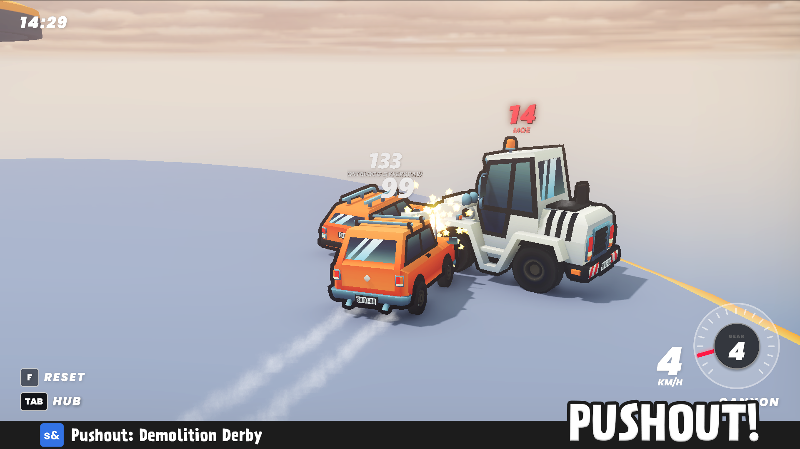
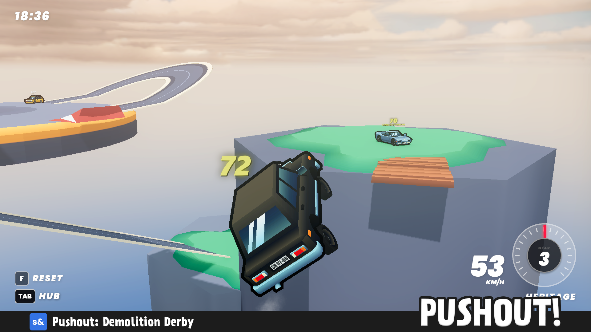
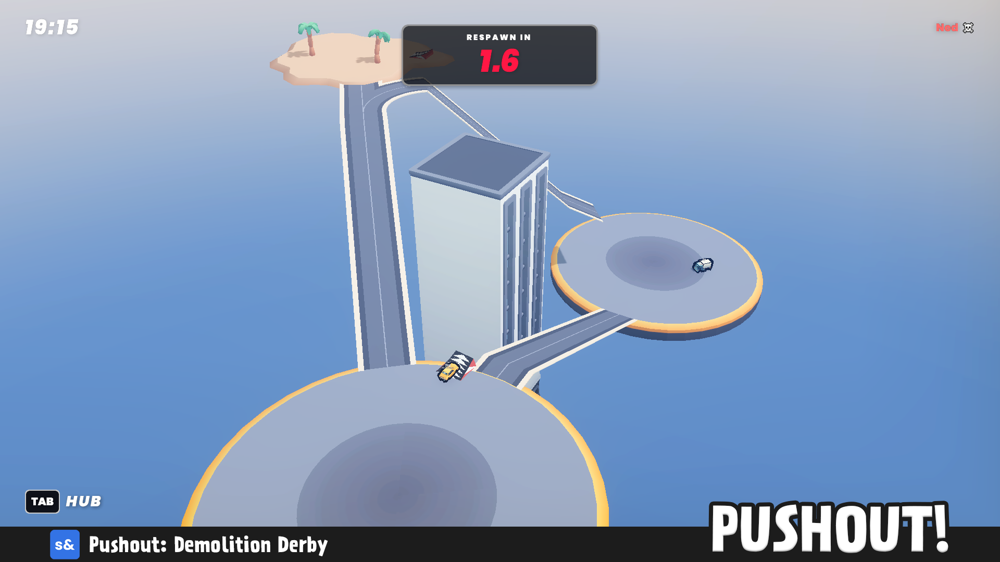

Dynamiczna gra multiplayer typu vehicle combat. Celem jest utrzymanie się na arenie przez 240 sekund i wypychanie przeciwników poza platformę. Inspiracją były klasyczne tryby Demolition Derby i Sumo z SA:MP oraz MTA.
Pushout: Demolition Derby to autorski projekt dynamicznej gry zręcznościowej online nastawionej na fizykę i rywalizację. Gra wskrzesza mechanikę znaną z kultowych modyfikacji do GTA San Andreas (SA:MP/MTA), przenosząc ją w nowoczesne realia silnika Source 2. Projekt znajduje się w fazie otwartej bety, stale gromadząc zaangażowaną społeczność graczy na platformie s&box.
Byłem odpowiedzialny za pełny cykl produkcyjny - od projektu mechanik po architekturę kodu, sieciową synchronizację fizyki, wdrożenie UI oraz analitykę popularności tytułu.



Projekt rozwinął moje umiejętności optymalizacji kodu pod kątem rozgrywki wieloosobowej oraz pracy z systemem fizyki silnika Source 2 i s&box. Ponad 1200 rozegranych sesji i setki unikalnych graczy w krótkim czasie pozwoliły mi na zbieranie feedbacku live, analizowanie błędów w środowisku produkcyjnym i wdrażanie szybkich zmian balansu (LiveOps), co udowodniło przydatność mojej architektury w realnych warunkach rynkowych.